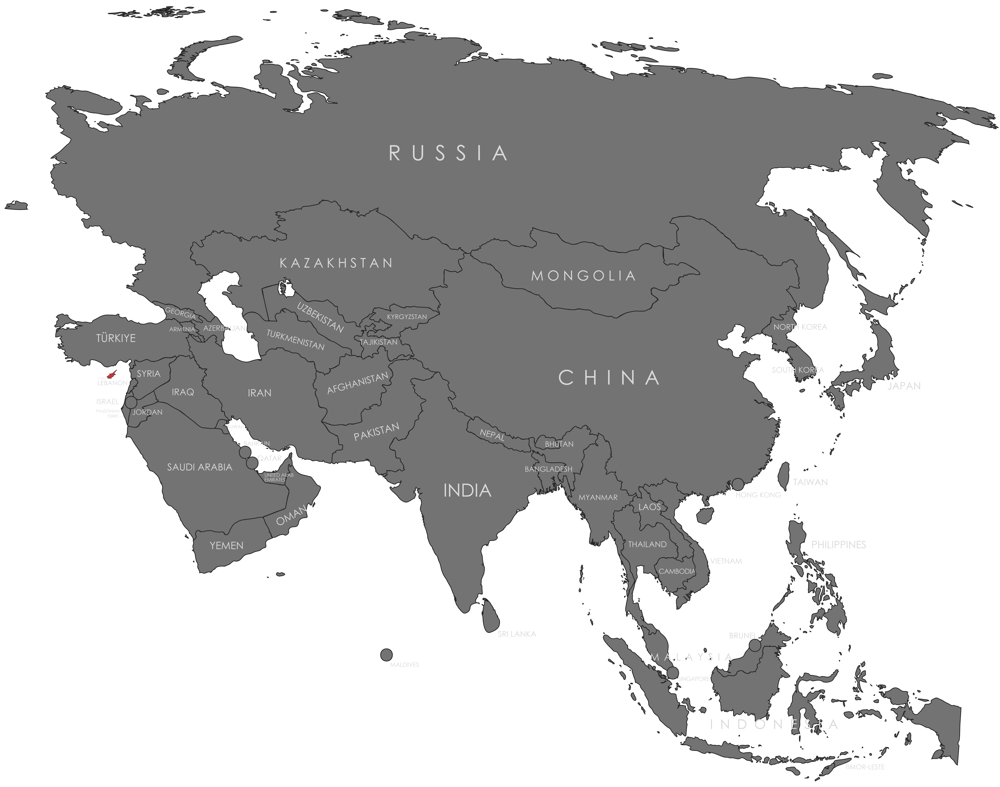

Specifications
- Local Name: Κύπρος (Kýpros) / Kıbrıs
- Proportion: 3:5
- Name of the Flag: Flag of Cyprus
- Adopted: August 16, 1960
Symbolism
- White: Peace and harmony
- Copper-orange: Represents the large copper deposits historically found on the island
- Green: Peace and hope
- Map of Cyprus: Symbolizes the entire island and national unity
- Olive branches: Represent peace between Greek Cypriots and Turkish Cypriots
Colors:
Shapes / Symbols:
Meaning / Special Display
- This is one of the few national flags that features a map as its main symbol.
- It emphasizes peace and unity between communities on the island.
Description
- The flag consists of a white field with a copper-orange silhouette of Cyprus above two crossed green olive branches.
- For citizens, it symbolizes hope for harmony and the desire for peaceful coexistence.

Return to Gallery